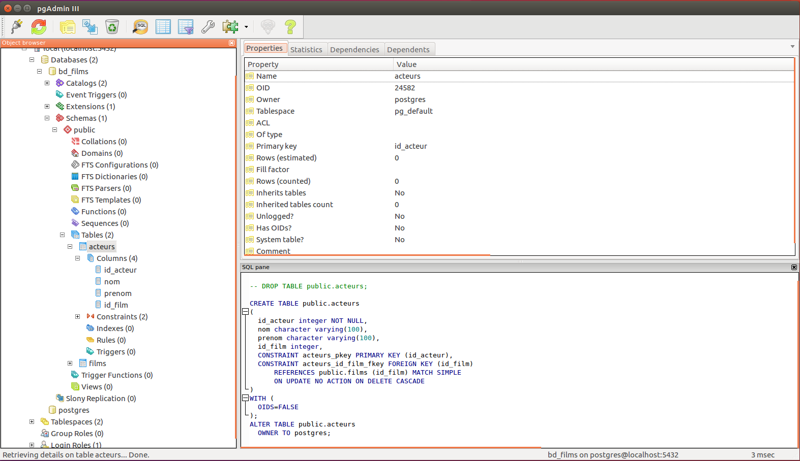

- Ces diapositives sont disponibles en version web et en PDF.
- L'ensemble du matériel de cours est disponible sur la page du portail moodle.
Séance 4: L'organisation des données - 2
BIO 500 - Méthodes en écologie computationnelle
Dominique Gravel & Steve Vissault
Laboratoire d'écologie intégrative
Séance 4
Les grandes étapes
- Spécifier la connexion avec le serveur
- Créer la base de données
- Créer les tables et spécifier les clés
- Ajouter de l'information dans les tables
- Faire des requêtes pour extraire l'information
Important:
Pour ceux dont la VM ne fonctionne pas, il possible de faire les exercices de ce cours sur Windows ou MacOSX.
Retour rapide sur la séance de la semaine dernière
Connexion au serveur
library(RPostgreSQL)
con <- dbConnect(PostgreSQL(),
host="localhost",
port=5432,
user= "postgres")
# On créé la base de données et on ferme la connexion
dbSendQuery(con,"DROP DATABASE IF EXISTS bd_films;")
dbSendQuery(con,"CREATE DATABASE bd_films;")
dbDisconnect(con)
# On se connecte à la nouvelle base de données
con <- dbConnect(PostgreSQL(),
host="localhost",
port=5432,
user= "postgres",
dbname="bd_films")
Question: Sur ce script, où sont les instructions SQL? Òu sont les commandes R?
Création de la table films
tbl_films <- "CREATE TABLE films (
id_film integer,
titre varchar(300),
annee_prod integer,
PRIMARY KEY (id_film)
);"
dbSendQuery(con,tbl_films)
## <PostgreSQLResult>
Création de la table acteurs
tbl_acteurs <- "CREATE TABLE acteurs (
id_acteur integer,
nom varchar(100),
prenom varchar(100),
id_film integer,
PRIMARY KEY (id_acteur),
FOREIGN KEY (id_film) REFERENCES films (id_film) ON DELETE CASCADE
);"
dbSendQuery(con,tbl_acteurs)
## <PostgreSQLResult>
pgAdmin3
pgAdmin3 est un client avec une interface graphique permettant de visualiser si les opérations de création de tables ont bien été réalisées.

Ajouter de l'information dans les tables
SQL - INSERT
On veut maintenant insérer des données dans les tables acteurs et films.
L'instruction INSERT permet d'insérer une ligne à la fois:
INSERT INTO films(id_film,titre,annee_prod) VALUES (1,'la vie est belle',1997);
INSERT INTO acteurs(id_acteur,prenom,nom,id_film) VALUES(1,'Nicoletta','Braschi',1);
INSERT INTO acteurs(id_acteur,prenom,nom,id_film) VALUES(2,'Roberto','Benigni',1);
SQL - COPY ... FROM
L'instruction SQL COPY ... FROM permet d'insérer plusieurs lignes à la fois:
COPY films FROM '/Users/SteveVissault/Documents/Git/BIO500/cours4/pres/assets/donnees/bd_beacon/bd_films.csv'
WITH FORMAT CSV HEADER DELIMITER ';';
Documentation: http://docs.postgresql.fr/9.5/sql-copy.html
RPostgreSQL - dbWriteTable
La librairie RPostgreSQL peut nous aider plus facilement à accomplir cette tâche:
# Lecture des fichiers CSV
bd_films <- read.csv2(file='./assets/donnees/bd_beacon/bd_films.csv')
bd_acteurs <- read.csv2(file='./assets/donnees/bd_beacon/bd_acteurs.csv')
# Injection des enregistrements dans la BD
dbWriteTable(con,append=TRUE,name="films",value=bd_films, row.names=FALSE)
## [1] TRUE
dbWriteTable(con,append=TRUE,name="acteurs",value=bd_acteurs, row.names=FALSE)
## [1] TRUE
Exercice 1 (10-15 minutes)
Ce premier exercice est important pour la suite de la séance.
- Recréer la base de données
bd_filmsavec ses deux tablesfilmsetacteurs - Insérer les données bd_acteurs.csv et bd_films.csv dans les deux tables à l'aide de la commande R
dbWriteTable()
pgAdmin3
Il est également possible d'insérer des données à partir du logiciel pgAdmin3.
Les requêtes
Sélectionner des tables et des colonnes
La connexion est ouverte et toujours accessible depuis l'objet con.
sql_requete <- "
SELECT id_film, titre, annee_prod
FROM films LIMIT 10
;"
films <- dbGetQuery(con,sql_requete)
head(films)
## id_film titre annee_prod
## 1 4 'Breaker' Morant 1980
## 2 5 'burbs, The 1989
## 3 6 'Crocodile' Dundee II 1988
## 4 7 *batteries not included 1987
## 5 3 ...And Justice for All 1979
## 6 8 10 1979
SELECTspécifie les colonnes.FROMspécifie la table.- On peut également ajouter une
LIMIT. - Documentation SQL Select.
Sélectionner des tables et des colonnes
sql_requete <- "SELECT * FROM films LIMIT 10;"
films <- dbGetQuery(con,sql_requete)
head(films)
## id_film titre annee_prod
## 1 4 'Breaker' Morant 1980
## 2 5 'burbs, The 1989
## 3 6 'Crocodile' Dundee II 1988
## 4 7 *batteries not included 1987
## 5 3 ...And Justice for All 1979
## 6 8 10 1979
*permet de ne pas spécifier une colonne en particulier.- Cette requête retournera toutes les colonnes de la table
films - Note: L'instruction
LIMITest utilisée dans les prochaines diapos afin de permettre le rendu des requêtes sur une diapo.
Sélectionner des enregistrements unique
sql_requete <- "SELECT DISTINCT nom, prenom
FROM acteurs LIMIT 10;"
films <- dbGetQuery(con,sql_requete)
head(films)
## nom prenom
## 1 Smith Douglas (VI)
## 2 Hilliard Ernest
## 3 Young Vanessa (I)
## 4 Carpenter Jack (I)
## 5 Maron Rob
## 6 Kallianiotes Helena
- L'instruction
DISTINCTpermettra de retourner la combinaison unique de noms et prénoms présent dans la table acteurs.
Ordonner la table
sql_requete <- "
SELECT titre, annee_prod, id_film
FROM films ORDER BY annee_prod DESC
;"
derniers_films <- dbGetQuery(con,sql_requete)
head(derniers_films)
## titre annee_prod id_film
## 1 Wilson, Michael NA 5496
## 2 Khan, George NA 2732
## 3 Walker, Amanda NA 5350
## 4 Franklin, Cherie NA 1823
## 5 Thomas, Meda NA 5030
## 6 Cicco, Johnny NA 984
ORDER BYpermet de trier par ordre croissant (ASC) ou décroissant (DESC).
Critères avec NULL
sql_requete <- "
SELECT id_film, titre, annee_prod
FROM films WHERE annee_prod IS NOT NULL
ORDER BY annee_prod DESC
;"
annees_films <- dbGetQuery(con,sql_requete)
head(annees_films)
## id_film titre annee_prod
## 1 2354 Hot Fuzz 2007
## 2 3663 Number 23, The 2007
## 3 5473 Wild Hogs 2007
## 4 727 Bridge to Terabithia 2007
## 5 3487 Music and Lyrics 2007
## 6 4159 Reno 911!: Miami 2007
WHERE, spécifie les critères de la requête.annee_prod IS NULLpermet d'obtenir seulement les films n'ayant pas d'année de production.
Combiner les critères
sql_requete <- "
SELECT id_film, titre, annee_prod
FROM films WHERE
(annee_prod >= 1930 AND annee_prod <= 1940)
OR (annee_prod >= 1950 AND annee_prod <= 1960)
ORDER BY annee_prod
;"
derniers_films <- dbGetQuery(con,sql_requete)
head(derniers_films)
## id_film titre annee_prod
## 1 157 All Quiet on the Western Front 1930
## 2 239 Animal Crackers 1930
## 3 603 Blaue Engel, Der 1930
## 4 1820 Frankenstein 1931
## 5 3106 M 1931
## 6 3398 Monkey Business 1931
- Multi-critères avec
ANDetOR - Les parenthèses définissent les priorités d'opérations.
- Opérateurs de comparaison:
>=,<=,=(Valeurs numériques) - Documentation sur les opérateurs de comparaisons
Critères sur le texte avec LIKE
sql_requete <- "
SELECT id_film, titre, annee_prod
FROM films WHERE titre LIKE '%Voyage%'
;"
derniers_films <- dbGetQuery(con,sql_requete)
head(derniers_films)
## id_film titre annee_prod
## 1 1662 Fantastic Voyage 1966
## 2 3654 Now, Voyager 1942
## 3 4770 Star Trek IV: The Voyage Home 1986
## 4 5330 Voyage dans la lune, Le 1902
- Rechercher dans le texte:
LIKE %: n'importe quels caractères_: un seul caractère (exemple:_1_peut renvoyer113ou encoreA1C)- Le critère contraire est aussi possible avec
NOT(exemple:WHERE titre NOT LIKE '%voyage%')
Exercice 4 (10 minutes)
Dans ta table acteurs, essayer de trouver votre acteur préféré avec LIKE ou avec = 'votre_acteur_pref'
Agréger l'information (1 ligne)
sql_requete <- "
SELECT avg(annee_prod) AS moyenne,
min(annee_prod), max(annee_prod)
FROM films;"
resume_films <- dbGetQuery(con,sql_requete)
head(resume_films)
## moyenne min max
## 1 1989.853 1902 2007
- Pour faire une synthèse de l'information sur une seule ligne.
- Faire des opérations sur les champs numériques:
max,min,sum,avg,count. - Mais aussi les opérations classiques:
*,/,-etc. - Renommer les colonnes avec
AS.
Agréger l'information (plusieurs lignes par groupe)
sql_requete <- "
SELECT count(titre) AS nb_films, annee_prod
FROM films
GROUP BY annee_prod;"
resume_films <- dbGetQuery(con,sql_requete)
head(resume_films)
## nb_films annee_prod
## 1 1278 NA
## 2 29 1975
## 3 9 1947
## 4 44 1981
## 5 27 1972
## 6 11 1956
COUNTpermet de dénombrer le nombre de lignes.GROUP BYdéfinit les champs sur lequel se fera l'agrégation des données.
Exercice 5 (10 minutes)
À l'aide de la base de données bd_films, dénombrer le nombre d'acteurs par films
Quels sont les 10 acteurs les plus prolifiques?
Jointures entre tables
Jointures entre tables
Le INNER JOIN est un type de jointure, renvoyant seulement les films et les acteurs ayant un identifiant id_film commun.
sql_requete <- "
SELECT titre, annee_prod, films.id_film, acteurs.id_film
FROM films
INNER JOIN acteurs ON films.id_film = acteurs.id_film
;"
acteurs_films <- dbGetQuery(con,sql_requete)
head(acteurs_films,4)
## titre annee_prod id_film id_film
## 1 'Breaker' Morant 1980 4 4
## 2 'burbs, The 1989 5 5
## 3 'Crocodile' Dundee II 1988 6 6
## 4 *batteries not included 1987 7 7
Les type de jointures

Jointures entre tables
On peut spécifier la jointure avec USING seulement si les deux clés possèdent le même nom.
sql_requete <- "
SELECT titre, annee_prod, nom, prenom
FROM films
INNER JOIN acteurs USING (id_film)
;"
acteurs_films <- dbGetQuery(con,sql_requete)
head(acteurs_films,4)
## titre annee_prod nom prenom
## 1 'Breaker' Morant 1980 Fitz-Gerald Lewis
## 2 'burbs, The 1989 Gage Kevin
## 3 'Crocodile' Dundee II 1988 Carrasco Carlos
## 4 *batteries not included 1987 Vasquez David (I)
Exercice 4 (10-15 minutes)
Combien il y a d'acteurs par film depuis les 10 dernières années?
Toujours avec la même base de données, on voudrait savoir le nombre d'acteurs par film depuis les 10 dernières années.
Exercice 5 (10-15 minutes)
Existe-t-il un film sans acteurs?
En vous servant des types de jointures, on voudrait savoir s'il existe des films sans acteurs.
Requêtes emboitées
sql_requete <- "
SELECT annee_prod, avg(nb_acteurs) AS moy_acteurs FROM (
SELECT titre, annee_prod, count(nom) AS nb_acteurs
FROM films
INNER JOIN acteurs USING (id_film)
GROUP BY annee_prod, titre
) AS nb_acteurs_film
GROUP BY annee_prod;"
moy_acteurs <- dbGetQuery(con,sql_requete)
head(moy_acteurs)
## annee_prod moy_acteurs
## 1 1902 9
## 2 1915 55
## 3 1916 59
## 4 1920 11
## 5 1921 59
## 6 1922 17
On s'interroge sur le nombre moyen d'acteurs par années.
Pour ce faire, on peut bâtir une requête à partir d'une autre requête.
Filtrer les requêtes à posteriori
sql_requete <- "
SELECT annee_prod, avg(nb_acteurs) AS moy_acteurs FROM (
SELECT titre, annee_prod, count(nom) AS nb_acteurs
FROM films
INNER JOIN acteurs USING (id_film)
GROUP BY annee_prod, titre
) AS nb_acteurs_film
GROUP BY annee_prod
HAVING avg(nb_acteurs) > 10;"
nb_acteurs <- dbGetQuery(con,sql_requete)
head(nb_acteurs)
## annee_prod moy_acteurs
## 1 1915 55
## 2 1916 59
## 3 1920 11
## 4 1921 59
## 5 1922 17
## 6 1924 24
- Il est possible de filtrer à posteriori sur la requête avec
HAVING.
Sauvegarder les requêtes
Sauvegarder une requête
Nous avons vu précédemment COPY ... FROM chemin_vers_fichier pour insérer des enregistrements dans les tables.
Il existe aussi l'instruction COPY ... TO chemin_vers_fichier pour sauvegarder une requête.
COPY (SELECT * FROM films WHERE titre LIKE 'A%')
TO '/home/etudiant/Documents/films_A.csv' WITH DELIMITER ';' CSV HEADER;
Sauvegarder une requête
Afin de sauvegarder les requêtes obtenues dans R par dbGetQuery(), il est possible d'utiliser les fonctions d'écritures tels que write.table() ou encore write.csv().
Il existe une façon de faire des requêtes dans pgAdmin3 et d'en sauvegarder les résultats grâce à l'outils Query.
Les requêtes stockées
Les requêtes stockées: les vues
Les vues permettent de stocker directement les requêtes à l'intérieur de la base de données afin d'interroger la vue ultérieurement.
CREATE VIEW moyenne_acteurs AS (
SELECT annee_prod, avg(nb_acteurs) AS moy_acteurs FROM (
SELECT titre, annee_prod, count(nom) AS nb_acteurs
FROM films
INNER JOIN acteurs USING (id_film)
GROUP BY annee_prod, titre
) AS nb_acteurs_film
GROUP BY annee_prod
);
Il sera possible d'atteindre cette vue plus tard avec:
SELECT * FROM moyenne_acteurs;
Manipuler les enregistrements
Mettre à jour des enregistrements
On peut mettre à jour des enregistrements d'une table avec des critères spécifiques.
UPDATE films SET genre = 'Dramatique' WHERE genre = 'Drame';
Note: On peut pas faire de modifications d'enregistrements sur des vues, seulement sur les tables directement.
Supprimer des enregistrements
On peut supprimer des enregistrements d'une table avec des critères spécifiques.
DELETE FROM films WHERE genre <> 'Comédie musicale';
Ou sans critères, pour supprimer tous les enregistrements.
DELETE FROM films;
Travail de la semaine
Travail de la semaine
Créer la base de données
Injecter les données
Faire les requêtes suivantes :
- Nombre de liens par étudiant
- Décompte de liens par paire d'étudiants
Enregistrer le résultat des requêtes
Travail de la semaine
En post-traitement sur R :
- Calculer le nombre d'étudiants, le nombre de liens et la connectance du réseau
- Calculer le nombre de liens moyens par étudiant et la variance
Écrire un script qui réalise les étapes 1-3 d'un bloc
Vous devez remettre les 5 scripts pour chacune de ces étapes ainsi que le script final qui les exécute l'une après l'autre. Assurez vous que le script fonctionne sur la machine virtuelle et entre des utilisateurs différents.
Lectures
Débat sur le partage des données
- Poisot et al. 2014. Moving toward a sustainable ecological science: don't let data go to waste ! Ideas in Ecology and Evolution 6: 11-19
- Mills et al. 2015. Archivin Primary Data: Solutions for Long-term Studies. Trends in Ecology and Evolution.
Découper les scripts avec R
Découper les étapes de son travail et les automatiser au moyen d'un seul script (un "pipeline")
Script 1 - Créer et interroger la BD
# Création des tables
dbSendQuery(con, "CREATE TABLE films (
id_film integer,
titre varchar(300),
annee_prod integer,
PRIMARY KEY (id_film)
);")
# On lit le fichier à insérer
bd_films <- read.csv2(file='./assets/donnees/
bd_beacon/bd_films.csv')
# On écrit dans la table
dbWriteTable(con,append=TRUE,name="films",
value=bd_films, row.names=FALSE)
# On fait une Requête
annees <- dbGetQuery(con,"SELECT DISTINCT
annee_prod FROM films;")
Script 2 - Analyse des données
# On appelle le script 1
source('/chemin/vers/script1/scrip1.R')
# Lister les objets R dans l'environnement
ls()
# On verra apparaitre l'objet 'annees'
# que l'on pourra utiliser
# pour la suite du maketravail